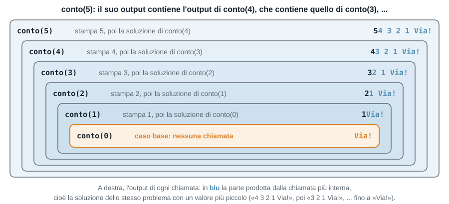
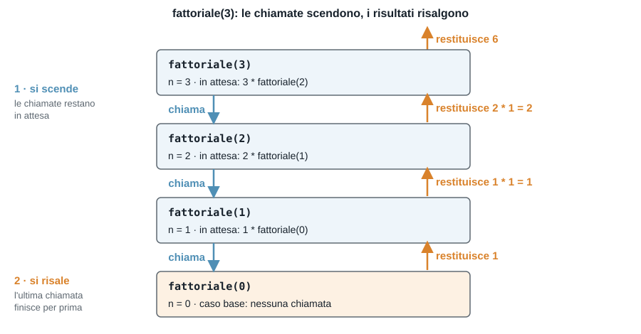
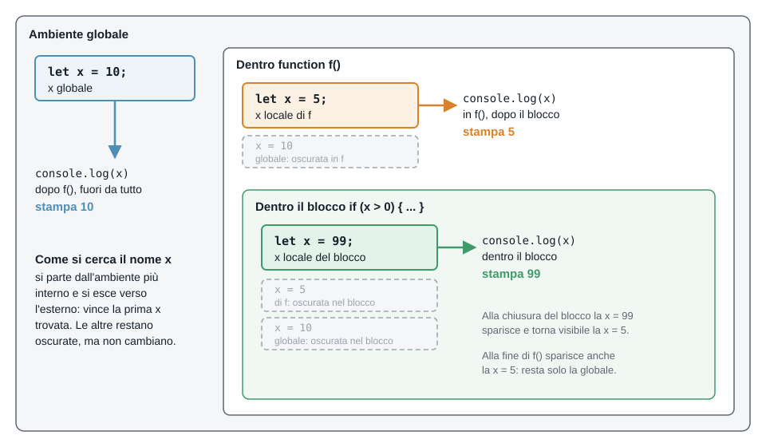

Fondamenti Teorici e Programmazione
Freccia destra o spazio per avanzare, freccia sinistra per tornare indietro — oppure i pulsanti "Indietro" e "Avanti" in fondo alla pagina.
Argomenti:
| Esercizio | Argomento |
|---|---|
| Esercizio 1 | Ricorsione: cosa stampa e in che ordine |
| Esercizio 2 | Ricorsione: trovare l'errore |
| Esercizio 3 | Fattoriale |
| Esercizio 4 | Somma dei quadrati |
| Esercizio 5 | Somma tra due numeri |
| Esercizio 6 | Variabili locali e globali: cosa stampa |
| Esercizio 7 | Variabili e visibilità: errori e correzioni |
| Esercizio 8 | Cicli annidati: cosa stampa |
| Esercizio 9 | Figure di asterischi e numeri |
| Esercizio 10 | Tavola pitagorica |
| Esercizio 11 | Coppie di dadi |
| Esercizio 12 | Numeri primi |
Le regole sono le stesse delle volte scorse:
Una funzione è ricorsiva quando, nel suo corpo, richiama se stessa. Ogni chiamata lavora su un problema più piccolo, finché il problema diventa così semplice da avere una risposta immediata.
function conto(n) {
if (n == 0) { // caso base: ci si ferma
console.log("Via!");
} else { // passo ricorsivo: la funzione richiama se stessa
console.log(n);
conto(n - 1); // con un valore più piccolo
}
}
conto(5); // stampa: 5 4 3 2 1 Via!Il problema che conto(5) risolve contiene una copia più piccola di se stesso: l'output 5 4 3 2 1 Via! è 5 seguito dall'output di conto(4), cioè 4 3 2 1 Via!; questo a sua volta è 4 seguito dall'output di conto(3), e così via fino a conto(0), che stampa solo Via!. Come scatole una dentro l'altra:

Una funzione ricorsiva ha sempre due parti:
n - 1).Ogni chiamata ha le proprie variabili: il n della chiamata conto(5) è diverso dal n della chiamata conto(4). Le chiamate restano "in attesa" una dentro l'altra, e ritornano in ordine inverso: l'ultima chiamata (quella del caso base) finisce per prima.
Per fattoriale(3) (che vedremo nell'esercizio 3), ecco come le chiamate si aprono e si chiudono:

Per questo conta dove si scrive un'istruzione rispetto alla chiamata ricorsiva: quello che sta prima viene eseguito andando "in giù", quello che sta dopo viene eseguito al ritorno, "in su".
Attenzione: senza caso base, o con un passo che non si avvicina mai al caso base, le chiamate non finiscono più e JavaScript si ferma con l'errore RangeError: Maximum call stack size exceeded.
Per ogni programma, dite cosa stampa senza eseguirlo; poi eseguitelo per controllare.
A. Questi due programmi sono quasi uguali: cosa stampa ciascuno? Cosa cambia nell'output, e perché?
Programma 1
function conto(n) {
if (n == 0) {
console.log("Via!");
} else {
console.log(n);
conto(n - 1);
}
}
conto(3);Programma 2
function conto(n) {
if (n == 0) {
console.log("Via!");
} else {
conto(n - 1);
console.log(n);
}
}
conto(3);B.
function f(n) {
if (n > 0) {
console.log("entro", n);
f(n - 1);
console.log("esco", n);
}
}
f(2);C. Nel programma B, quante volte viene chiamata la funzione f (compresa la chiamata iniziale f(2))? E se si chiama f(5)?
A. Il programma 1 stampa 3, 2, 1, Via!: ogni chiamata stampa il proprio n prima di richiamare se stessa. Il programma 2 stampa Via!, 1, 2, 3: ogni chiamata aspetta il risultato di quella successiva prima di stampare, quindi la prima a stampare è quella del caso base, poi le altre ritornano in ordine inverso e si stampa 1, poi 2, poi 3. Cambia l'ordine dell'output (esattamente al contrario, con Via! che passa dall'ultimo al primo posto): le stesse istruzioni, spostate prima o dopo la chiamata ricorsiva, vengono eseguite "in giù" oppure "in su".
B. Stampa, nell'ordine: entro 2, entro 1, esco 1, esco 2. Si "entra" nelle chiamate da 2 a 1, poi (con f(0) la condizione è falsa e non succede niente) si "esce" in ordine inverso, da 1 a 2.
C. f(2) fa 3 chiamate: f(2), f(1) e f(0). f(5) ne fa 6: f(5), f(4), ..., f(0). In generale, f(n) fa n + 1 chiamate.
Ciascuna di queste funzioni ha un problema. Dite cosa succede quando le si esegue (stampa all'infinito? un errore? un risultato strano?), e correggetele.
A.
function conto(n) {
console.log(n);
conto(n - 1);
}
conto(3);B.
function conto(n) {
if (n == 0) {
return;
}
console.log(n);
conto(n);
}
conto(3);C. Funziona con conto(3). Cosa succede con conto(-1)? E con conto(2.5)?
function conto(n) {
if (n == 0) {
return;
}
console.log(n);
conto(n - 1);
}D. Cosa stampa?
function somma(n) {
if (n == 0) {
return 0;
}
n + somma(n - 1);
}
console.log(somma(3));A. Manca il caso base: stampa 3, 2, 1, 0, -1, ... e non si ferma più, finché JavaScript si arrende con RangeError: Maximum call stack size exceeded. Correzione: aggiungere if (n == 0) { return; } all'inizio.
B. C'è il caso base, ma il passo ricorsivo richiama conto(n) con lo stesso valore: non ci si avvicina mai a 0. Stampa 3 all'infinito, poi lo stesso RangeError. Correzione: conto(n - 1).
C. Con conto(3) si passa per 2, 1 e 0: si ferma. Con conto(-1) si va a -2, -3, ... e 0 non si raggiunge mai; con conto(2.5) si va a 1.5, 0.5, -0.5, ... e lo 0 esatto non esce mai. Correzione: scrivere il caso base come n <= 0, che ferma la ricorsione anche per i valori "oltre" lo zero. (Per gli interi non negativi bastava n == 0, ma n <= 0 è più robusto.)
D. Stampa undefined. La riga n + somma(n - 1); calcola la somma ma non la restituisce: manca il return, quindi somma(3) non restituisce niente. Correzione: return n + somma(n - 1);. Il passo ricorsivo deve restituire il risultato, non solo calcolarlo.
Il fattoriale di un numero naturale n è n! = n * (n-1) * (n-2) * ... * 1, con 0! = 1. Si può scrivere come formula ricorsiva:
0! = 1 (caso base)n! = n * (n-1)! se n > 0 (passo ricorsivo)A. Calcolate a mano 3! usando la formula ricorsiva: scrivete 3! = 3 * 2! = ... fino al caso base, poi tornate indietro sostituendo i valori.
B. Scrivere la funzione fattoriale(n) che restituisce n! usando la ricorsione. Provarla con 0, 1, 5, 10.
C. Scrivere anche una versione con un ciclo for, fattoriale_ciclo(n), e confrontare i risultati delle due versioni.
A. 3! = 3 * 2! = 3 * (2 * 1!) = 3 * (2 * (1 * 0!)) = 3 * (2 * (1 * 1)) = 3 * 2 * 1 = 6.
B.
function fattoriale(n) {
if (n == 0) {
return 1; // caso base
}
return n * fattoriale(n - 1); // passo ricorsivo
}
console.log(fattoriale(0)); // 1
console.log(fattoriale(1)); // 1
console.log(fattoriale(5)); // 120
console.log(fattoriale(10)); // 3628800C.
function fattoriale_ciclo(n) {
let risultato = 1;
for (let i = 2; i <= n; i++) {
risultato = risultato * i;
}
return risultato;
}
console.log(fattoriale_ciclo(5)); // 120Le due versioni danno lo stesso risultato. Nella versione ricorsiva non c'è l'accumulatore: il "calcolo che si accumula" è nelle chiamate in attesa. Attenzione: fattoriale(-1) e fattoriale(2.5) non arrivano mai a 0, e danno RangeError: la funzione va usata con interi >= 0.
Per scrivere una funzione ricorsiva ci si pongono sempre le stesse domande:
n - 1), come la uso per ottenere la risposta per n?Un esempio, la somma dei numeri da 1 a n:
somma(0) vale 0;somma(n) è n più la somma dei numeri da 1 a n - 1, cioè n + somma(n - 1).function somma(n) {
if (n == 0) {
return 0;
}
return n + somma(n - 1);
}Spesso la formula del problema è già ricorsiva (fattoriale, somma, ...): in questi casi la funzione si scrive "copiando" la formula. Ricordate il return anche nel passo ricorsivo!
La somma dei quadrati dei primi n numeri naturali si può definire per ricorrenza:
Q(0) = 0Q(n) = Q(n-1) + n² se n > 0A. Scrivere la funzione ricorsiva sommaQuadrati(n) che restituisce Q(n), cioè 1² + 2² + ... + n² (non deve stampare). Ad esempio sommaQuadrati(3) restituisce 14.
B. Nel programma principale, stampare Q(3), Q(10) e Q(100). Qual è il caso base? Cosa cambia, rispetto alla funzione somma(n) del Recap 2, nel passo ricorsivo?
// A.
function sommaQuadrati(n) {
if (n == 0) {
return 0;
}
return sommaQuadrati(n - 1) + n * n;
}
// B.
console.log(sommaQuadrati(3)); // 14
console.log(sommaQuadrati(10)); // 385
console.log(sommaQuadrati(100)); // 338350Il caso base è n == 0, con risultato 0. Rispetto a somma(n) cambia solo il termine che si aggiunge: n * n al posto di n. A ogni chiamata cambia n (diminuisce di 1) e la ricorsione si ferma a 0.
A. Scrivere la funzione ricorsiva sommaTra(a, b) che restituisce la somma di tutti gli interi da a a b (estremi inclusi), e 0 se a > b. Ad esempio sommaTra(3, 6) restituisce 18 (3 + 4 + 5 + 6).
B. Qual è il caso base? Qui cosa cambia a ogni chiamata ricorsiva: a, b o entrambi?
C. Usando sommaTra, scrivere una riga che stampa la somma dei numeri da 1 a 100, e una che stampa la somma dei numeri da 50 a 100.
// A.
function sommaTra(a, b) {
if (a > b) {
return 0;
}
return a + sommaTra(a + 1, b);
}
console.log(sommaTra(3, 6)); // 18
// C.
console.log(sommaTra(1, 100)); // 5050
console.log(sommaTra(50, 100)); // 3825B. Il caso base è a > b (intervallo vuoto: nessun numero da sommare). A ogni chiamata cambia a, che aumenta di 1 fino a superare b: il problema si "riduce" accorciando l'intervallo dal lato sinistro, mentre b resta uguale. Rispetto agli esercizi precedenti, qui il problema ha due parametri, ma solo uno cambia.
Lo scope di una variabile è la parte di programma in cui la variabile esiste e si può usare.
n;let, una variabile esiste solo nel blocco { ... } in cui è dichiarata: anche la i di un for o una variabile dentro un if.Se una variabile locale ha lo stesso nome di una variabile esterna, la locale oscura (in inglese shadowing) quella esterna: dentro la funzione il nome si riferisce alla locale, e la globale non è raggiungibile e non viene toccata.
let x = 10; // globale
function f() {
let x = 5; // locale a f: oscura la x globale
if (x > 0) {
let x = 99; // locale al blocco: oscura la x di f
console.log(x); // 99
}
console.log(x); // 5: il blocco è finito
}
f();
console.log(x); // 10: la x globale non è cambiataOgni livello (programma, funzione, blocco) ha le sue variabili. Per trovare il significato di x, JavaScript parte dal livello più interno e risale verso l'esterno, fermandosi alla prima x che trova.

Senza il let la situazione è diversa: l'assegnamento modifica la variabile globale.
function g() {
x = x + 1; // niente let: usa la x globale
}
g();
console.log(x); // 11Lo stesso vale per i parametri: nella funzione h(x) il parametro x è una variabile locale che oscura la x globale, e cambiarlo non cambia il valore fuori.
function h(x) {
x = x * 2;
return x;
}
console.log(h(3), x); // 6 11: la x globale è ancora 11Regole pratiche:
g) rende il programma difficile da seguire: se serve un valore, meglio passarlo come parametro e restituire il risultato con return.Per ogni programma, dite cosa stampa senza eseguirlo; se c'è un errore, dite quale e perché. Poi eseguitelo per controllare.
A.
let x = 1;
function f() {
let x = 2;
console.log(x);
}
f();
console.log(x);B.
let x = 1;
function g() {
x = x + 10;
}
g();
g();
console.log(x);C.
function raddoppia(n) {
n = n * 2;
return n;
}
let n = 5;
let r = raddoppia(n);
console.log(n, r);D.
let x = 10;
if (x > 5) {
let x = 20;
x = x + 1;
console.log(x);
}
console.log(x);E.
for (let i = 0; i < 3; i++) {
console.log(i);
}
console.log(i);A. Stampa 2 e poi 1. Dentro f la x locale (2) oscura quella globale; fuori da f si vede la globale, che non è mai stata toccata.
B. Stampa 21. Senza let, x = x + 10 modifica la variabile globale: 1 + 10 = 11, e alla seconda chiamata 11 + 10 = 21.
C. Stampa 5 10. Il parametro n è una variabile locale, diversa dalla n di fuori: la funzione riceve una copia del valore, e raddoppia la copia. La n globale resta 5; il risultato 10 è nella variabile r, grazie al return.
D. Stampa 21 e poi 10. Dentro il blocco if esiste una x nuova (20, poi 21) che oscura la x di fuori; alla chiusura del blocco quella x sparisce e torna visibile la x = 10, che non è cambiata.
E. Stampa 0, 1, 2 e poi dà un errore: ReferenceError: i is not defined. Con let dentro l'intestazione del for, la i esiste solo nel ciclo. Per usarla anche dopo, andrebbe dichiarata prima del ciclo (let i; e poi for (i = 0; ...)).
A. Cosa stampa questo programma? Se c'è un problema, dite quale e correggetelo in modo da stampare il risultato.
function calcola() {
let risultato = 5 * 2;
}
calcola();
console.log(risultato);B. Cosa stampa ciascuno di questi due programmi? Se c'è un problema, dite quale e perché.
// programma 1
let y = 3;
function stampa() {
console.log(y);
}
stampa();// programma 2
function stampa() {
console.log(y);
}
stampa();
let y = 3;C. La funzione dovrebbe restituire quanti numeri ci sono da n fino a 1 (quindi conta(3) dovrebbe dare 3). Cosa restituisce davvero? Se non è il valore atteso, dite perché e correggetela.
function conta(n) {
let passi = 0;
if (n > 0) {
passi = passi + 1;
conta(n - 1);
}
return passi;
}
console.log(conta(3));D. Questa funzione modifica la variabile globale totale. Riscrivetela in modo che non tocchi variabili globali: riceva il totale come parametro e restituisca il nuovo totale.
let totale = 0;
function aggiungi(x) {
totale = totale + x;
}
aggiungi(3);
aggiungi(4);
console.log(totale); // 7A. Dà ReferenceError: risultato is not defined. risultato è una variabile locale di calcola: esiste solo durante la chiamata, e fuori dalla funzione non si vede. Per usarla si fa restituire il valore:
function calcola() {
let risultato = 5 * 2;
return risultato;
}
console.log(calcola()); // 10B. Il programma 1 stampa 3. Il programma 2 dà ReferenceError: Cannot access 'y' before initialization: la funzione viene chiamata prima che y sia stata dichiarata. Non conta dove sta scritta la funzione, ma quando viene eseguita: y deve esistere nel momento in cui stampa() viene chiamata.
C. Restituisce 1, non 3. Ogni chiamata ha la propria passi, che parte da 0: conta(3) la porta a 1 e richiama conta(2), ma butta via il suo risultato. Serve usare il valore restituito dalla chiamata ricorsiva:
function conta(n) {
if (n == 0) {
return 0; // caso base
}
return 1 + conta(n - 1); // 1 per questo numero, più quelli che restano
}
console.log(conta(3)); // 3D.
function aggiungi(totale, x) {
return totale + x;
}
let totale = 0;
totale = aggiungi(totale, 3);
totale = aggiungi(totale, 4);
console.log(totale); // 7Il parametro totale è una variabile locale (oscura la totale globale dentro la funzione): la funzione calcola e basta, e chi la chiama decide cosa farne del risultato.
Un ciclo può contenere un altro ciclo. Il ciclo interno viene eseguito per intero a ogni giro del ciclo esterno. Esempio: le prime cinque righe delle tabelline del 2, del 3 e del 4.
for (let i = 2; i <= 4; i++) { // esterno: una tabellina per giro (2, 3, 4)
let riga = ""; // si azzera a ogni giro esterno
for (let j = 1; j <= 5; j++) { // interno: 5 giri, ricomincia ogni volta
riga = riga + (i * j) + " ";
}
console.log(riga); // una riga per ogni tabellina
}2 4 6 8 10
3 6 9 12 15
4 8 12 16 20Il ciclo esterno fa 3 giri (i vale 2, 3, 4); a ognuno, il ciclo interno fa tutti i suoi 5 giri (j da 1 a 5) e costruisce una riga.
3 * 5 = 15;i, j) devono avere nomi diversi;riga) vanno inizializzate dentro il ciclo esterno, prima del ciclo interno;i ne ha i: il ciclo interno va da 1 a i);i e j a ogni giro.Per ogni programma, dite cosa stampa senza eseguirlo (aiutatevi con una tabella dei valori di i e j); poi eseguitelo per controllare.
A.
for (let i = 1; i <= 3; i++) {
for (let j = 1; j <= 2; j++) {
console.log(i, j);
}
}B.
for (let i = 1; i <= 3; i++) {
let riga = "";
for (let j = 1; j <= 3; j++) {
riga = riga + (i * j) + " ";
}
console.log(riga);
}C. Quanto vale conta alla fine? E se i due cicli arrivassero a 100 invece che a 4?
let conta = 0;
for (let i = 1; i <= 4; i++) {
for (let j = 1; j <= i; j++) {
conta++;
}
}
console.log(conta);D. Questo programma doveva stampare un triangolo di asterischi, ma non fa quello che ci si aspetta. Cosa stampa? Come si corregge?
let riga = "";
for (let i = 1; i <= 3; i++) {
for (let j = 1; j <= i; j++) {
riga = riga + "*";
}
console.log(riga);
}A. Per ogni valore di i il ciclo interno gira per intero: stampa 1 1, 1 2, 2 1, 2 2, 3 1, 3 2 (6 righe = 3 × 2). Cambia prima j, poi i.
B. Stampa una tabellina per riga: 1 2 3, 2 4 6, 3 6 9. riga viene azzerata a ogni giro esterno, e il ciclo interno aggiunge i tre prodotti i * j.
C. Il corpo interno viene eseguito 1 + 2 + 3 + 4 = 10 volte, quindi stampa 10: a ogni i il ciclo interno fa i giri. Con 100 sarebbe 1 + 2 + ... + 100 = 5050. Quando il numero di giri interni dipende da i, non si moltiplica semplicemente: si somma.
D. Stampa *, ***, ****** (1, 3 e 6 asterischi): riga è dichiarata fuori dal ciclo esterno, quindi non viene azzerata e si porta dietro gli asterischi dei giri precedenti. Correzione: spostare let riga = ""; dentro il ciclo esterno, prima del ciclo interno.
Chiedere all'utente un intero n >= 1 (facendo ripetere la domanda finché non è valido) e stampare le seguenti figure. Per n = 4:
A. Un quadrato di asterischi, n righe di n asterischi:
****
****
****
****B. Un triangolo rovesciato, con n asterischi nella prima riga e uno nell'ultima:
****
***
**
*C. Un triangolo di numeri: nella riga i ci sono i numeri da 1 a i, separati da uno spazio:
1
1 2
1 2 3
1 2 3 4D. Un triangolo allineato a destra, con n righe: nella riga i ci sono n - i spazi seguiti da i asterischi:
*
**
***
****Suggerimento: per ogni figura chiedetevi quanti giri fa il ciclo interno in funzione di i; poi, se serve, costruite la riga come stringa.
let n;
do {
n = Number(prompt("n (intero >= 1):"));
} while (n < 1 || !Number.isInteger(n));
// A. quadrato: il ciclo interno fa sempre n giri
for (let i = 1; i <= n; i++) {
let riga = "";
for (let j = 1; j <= n; j++) {
riga = riga + "*";
}
console.log(riga);
}
// B. triangolo rovesciato: alla riga i servono n - i + 1 asterischi
for (let i = 1; i <= n; i++) {
let riga = "";
for (let j = 1; j <= n - i + 1; j++) {
riga = riga + "*";
}
console.log(riga);
}
// C. numeri da 1 a i
for (let i = 1; i <= n; i++) {
let riga = "";
for (let j = 1; j <= i; j++) {
riga = riga + j + " ";
}
console.log(riga);
}
// D. allineato a destra: prima n - i spazi, poi i asterischi
for (let i = 1; i <= n; i++) {
let riga = "";
for (let j = 1; j <= n - i; j++) {
riga = riga + " ";
}
for (let j = 1; j <= i; j++) {
riga = riga + "*";
}
console.log(riga);
}Cambia solo il numero di giri del ciclo interno: n nel quadrato, n - i + 1 nel triangolo rovesciato, i nel triangolo di numeri. In D i due cicli interni sono uno dopo l'altro (non uno dentro l'altro), entrambi dentro il ciclo esterno. In C la riga finisce con uno spazio in più: non si vede, ma c'è.
La tavola pitagorica mostra i prodotti i * j per i e j da 1 a n.
A. Chiedere n all'utente e stampare la tavola, una riga per ogni i, con i numeri allineati in colonne. Ad esempio per n = 5:
1 2 3 4 5
2 4 6 8 10
3 6 9 12 15
4 8 12 16 20
5 10 15 20 25Ogni numero occupa una colonna larga 4 caratteri, allineato a destra.
B. Stampare solo la parte "sopra la diagonale" (j >= i), lasciando vuote le caselle sotto. Per n = 5:
1 2 3 4 5
4 6 8 10
9 12 15
16 20
25C. Calcolare e stampare la somma di tutti i numeri della tavola per n = 10. C'è una formula per ottenerla?
let n = Number(prompt("n:"));
// restituisce il numero preceduto da tanti spazi quanti servono per arrivare a 4 caratteri
function colonna(numero) {
if (numero < 10) {
return " " + numero; // 1 cifra: 3 spazi
} else if (numero < 100) {
return " " + numero; // 2 cifre: 2 spazi
} else {
return " " + numero; // 3 cifre: 1 spazio
}
}
// A.
for (let i = 1; i <= n; i++) {
let riga = "";
for (let j = 1; j <= n; j++) {
riga = riga + colonna(i * j);
}
console.log(riga);
}
// B. sotto la diagonale si scrive uno spazio vuoto della stessa larghezza
for (let i = 1; i <= n; i++) {
let riga = "";
for (let j = 1; j <= n; j++) {
if (j >= i) {
riga = riga + colonna(i * j);
} else {
riga = riga + " ";
}
}
console.log(riga);
}
// C.
let somma = 0;
for (let i = 1; i <= 10; i++) {
for (let j = 1; j <= 10; j++) {
somma = somma + i * j;
}
}
console.log(somma); // 3025In C la somma è (1 + 2 + ... + 10) * (1 + 2 + ... + 10) = 55 * 55 = 3025: la tavola è il prodotto di due somme uguali. somma è un accumulatore dichiarato fuori da entrambi i cicli, perché deve tenere il totale su tutti i giri.
Si lanciano due dadi a sei facce. Ogni risultato è una coppia (a, b) con a e b da 1 a 6.
A. Stampare tutte le coppie la cui somma è 7, e dire quante sono. Quante coppie in tutto si controllano?
B. Chiedere all'utente una somma s (facendo ripetere la domanda finché non è un intero tra 2 e 12), e stampare quante coppie danno quella somma. Provate con 2, 7 e 12.
C. Stampare, per ogni somma da 2 a 12, quante coppie la producono. Quale somma è la più frequente?
// A.
let quante = 0;
for (let a = 1; a <= 6; a++) {
for (let b = 1; b <= 6; b++) {
if (a + b == 7) {
console.log(a, b);
quante++;
}
}
}
console.log("coppie con somma 7:", quante); // 6 (1+6, 2+5, 3+4, 4+3, 5+2, 6+1)
// B.
let s;
do {
s = Number(prompt("Somma (intero tra 2 e 12):"));
} while (!Number.isInteger(s) || s < 2 || s > 12);
let conta = 0;
for (let a = 1; a <= 6; a++) {
for (let b = 1; b <= 6; b++) {
if (a + b == s) {
conta++;
}
}
}
console.log(conta); // s = 2 -> 1, s = 7 -> 6, s = 12 -> 1
// C.
for (let somma = 2; somma <= 12; somma++) {
let volte = 0;
for (let a = 1; a <= 6; a++) {
for (let b = 1; b <= 6; b++) {
if (a + b == somma) {
volte++;
}
}
}
console.log(somma, volte);
}In A si controllano 6 * 6 = 36 coppie, e a e b sono ordinate: (1, 6) e (6, 1) sono due coppie diverse. In C c'è un ciclo in più, quello esterno sulle somme, quindi i cicli annidati sono tre: il contatore volte si azzera a ogni somma. La somma più frequente è 7 (6 coppie), poi 6 e 8 (5 coppie ciascuna), ... fino a 2 e 12 (1 coppia).
Un numero n >= 2 è primo se non ha divisori tra 2 e n - 1.
A. Stampare tutti i numeri primi da 2 a 50 e quanti sono. Per ogni n il ciclo interno cerca un divisore, usando una variabile flag (come nell'esercitazione 3).
B. Il ciclo interno continua a girare anche dopo aver trovato un divisore, ma non serve più. Aggiungete un break per fermarlo, e verificate con un contatore globale che il numero di giri interni diminuisce. Di quanto?
// A.
let quanti = 0;
for (let n = 2; n <= 50; n++) {
let primo = true; // si riparte da true a ogni n
for (let d = 2; d < n; d++) {
if (n % d == 0) {
primo = false;
}
}
if (primo) {
console.log(n);
quanti++;
}
}
console.log("primi trovati:", quanti); // 15
// B.
let giri = 0;
for (let n = 2; n <= 50; n++) {
let primo = true;
for (let d = 2; d < n; d++) {
giri++;
if (n % d == 0) {
primo = false;
break; // esce dal ciclo interno, non da quello esterno
}
}
if (primo) {
console.log(n);
}
}
console.log("giri interni:", giri);I primi sono 2, 3, 5, 7, 11, 13, 17, 19, 23, 29, 31, 37, 41, 43, 47 (15). Nella versione A i giri interni sono 1 + 2 + ... + 48 = 1176; con il break sono molti meno, perché per i numeri pari ci si ferma subito a d = 2, e per gli altri non primi al loro più piccolo divisore. Il break esce solo dal ciclo più interno, e il ciclo esterno prosegue con il numero successivo. primo = true sta dentro il ciclo esterno: altrimenti, dopo il primo numero non primo, nessuno sarebbe più primo.